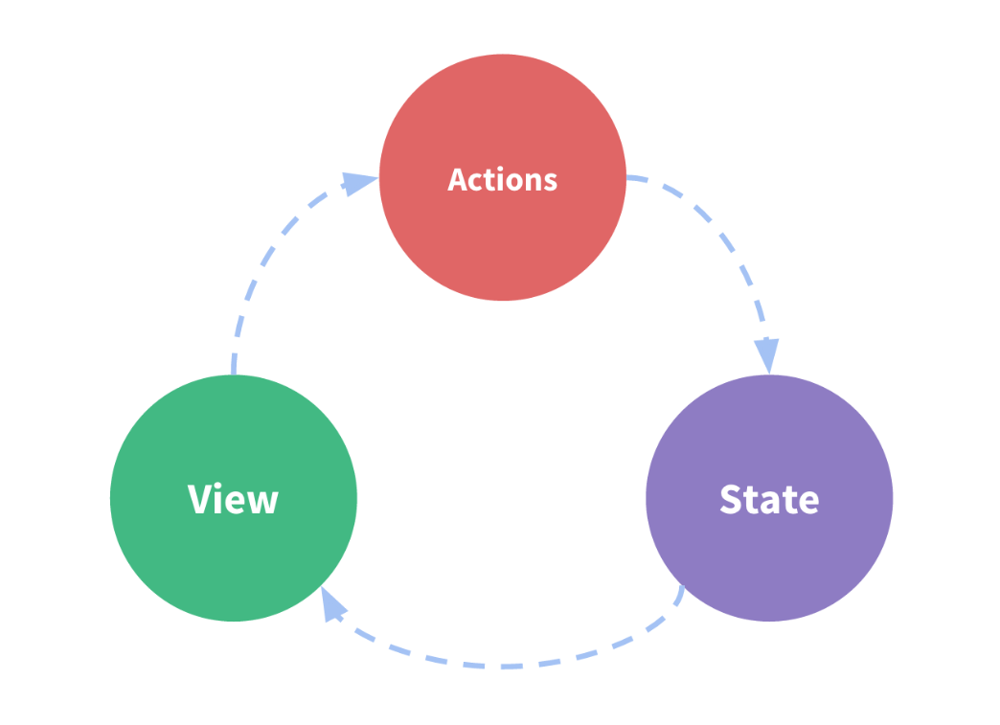

Redux
本文最后更新于：2023年6月6日 下午
第一章：Redux 的基础概念
什么是 Redux
Redux 是一个使用叫做 “action” 的事件来管理和更新应用状态的模式和工具库它以集中式 Store（centralized store）的方式对整个应用中使用的状态进行集中管理，其规则确保状态只能以可预测的方式更新
Redux 术语与概念
State 管理
这是一个小小的计数器组件
1 | |
它包含
- state：驱动应用的真实数据源头
- view：基于当前状态的视图声明性描述
- actions：根据用户输入在应用程序中发生的事件，并触发状态更新
这就引出了一个概念-单向数据流
单向数据流(one-way data flow)
- 用 state 来描述应用程序在特定时间点的状况
- 基于 state 来渲染出 View
- 当发生某些事情时（例如用户单击按钮），state 会根据发生的事情进行更新，生成新的 state
- 基于新的 state 重新渲染 View
术语
action
action 是一个具有 type 字段的普通 JavaScript 对象。你可以将 action 视为描述应用程序中发生了什么的事件.
这是一个典型的 action 对象
1 | |
Action Creator
action creator 是一个创建并返回一个 action 对象的函数。它的作用是让你不必每次都手动编写 action 对象：
1 | |
Reducer
reducer 是一个函数，接收当前的 state 和一个 action 对象，必要时决定如何更新状态，并返回新状态。
函数签名是：(state, action) => newState。
你可以将 reducer 视为一个事件监听器，它根据接收到的 action（事件）类型处理事件。
Reducer 必需符合以下规则：
- 只使用 state 和 action 参数计算新的状态值
- 禁止直接修改 state
- 禁止一切异步逻辑，依赖随机值或其他导致“副作用”的代码
这是一个 Reducer 的小例子:
1 | |
store
store是通过传入一个 reducer 来创建的，并且有一个名为 getState 的方法返回当前的状态值：
1 | |
Dispatch
Redux store 有一个方法叫 dispatch 更新 state 的唯一方法是调用 store.dispatch() 并传入一个 action 对象。 store 将执行所有 reducer 函数并计算出更新后的 state
1 | |
dispatch 一个 action 可以形象的理解为 “触发一个事件”。发生了一些事情，我们希望 store 知道这件事。 Reducer 就像事件监听器一样，当它们收到关注的 action 后，它就会更新 state 作为响应。
我们通常使用 action creator 来调用 action
1 | |
Select
Selector 函数可以从 store 状态树中提取指定的片段。随着应用变得越来越大，会遇到应用程序的不同部分需要读取相同的数据，selector 可以避免重复这样的读取逻辑：
1 | |
Redux 数据流
我们将上面提到的“单向数据流”步骤分解为更详细的内容:
- 初次启动
- 使用最顶层的 root reducer 函数创建 Redux store
- tore 调用一次 root reducer，并将返回值保存为它的初始 state
- 当视图 首次渲染时，视图组件访问 Redux store 的当前 state，并使用该数据来决定要呈现的内容。同时监听 store 的更新，以便他们可以知道 state 是否已更改。
- 更新环节
- 应用程序中发生了某些事情，例如用户单击按钮
- dispatch 一个 action 到 Redux store，例如 dispatch({type: ‘counter/increment’})
- store 用之前的 state 和当前的 action 再次运行 reducer 函数，并将返回值保存为新的 state
- store 通知所有订阅过的视图，通知它们 store 发生更新
- 每个订阅过 store 数据的视图 组件都会检查它们需要的 state 部分是否被更新。
- 发现数据被更新的每个组件都强制使用新数据重新渲染，紧接着更新网页